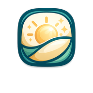
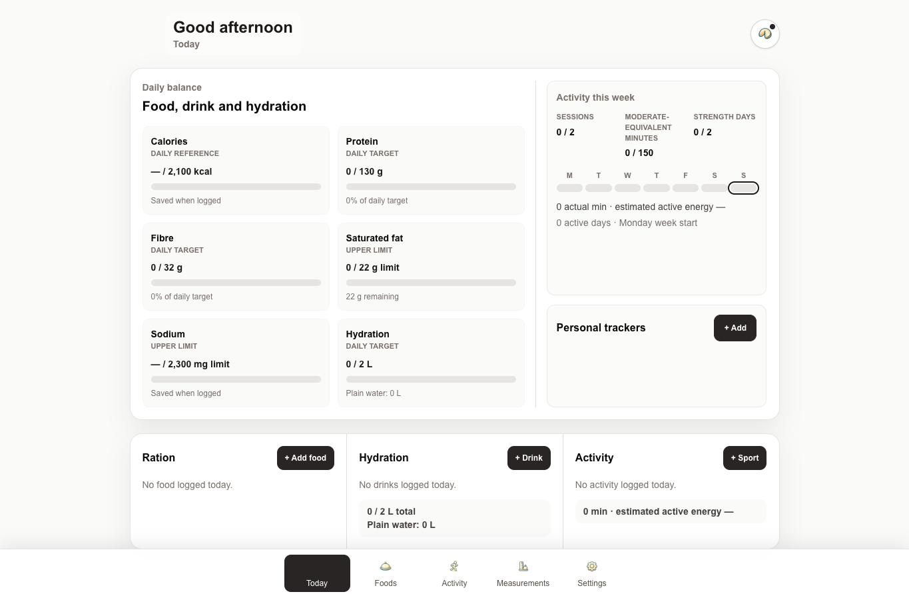

Creative Work

WellCanvas
Your health tracker, stored locally and shaped by you.
WellCanvas is a free, local-first, open-source tracker for food, hydration, activity, measurements and personal habits. It works without registration, contains no advertising, and is designed to be portable and customisable.
Open WellCanvas to use it immediately, or download the MIT-licensed source as a base for your own version.
WellCanvas is operational and is not under active feature development. Occasional bugs can be reported to oles.matsyshyn@gmail.com, and maintenance or bug-fix patches may be released when needed.
WellCanvas does not use cloud storage for your health records. Your profile, logs, measurements, trackers and personal library are stored locally on your device. WellCanvas does not upload this information to a WellCanvas server or make it remotely accessible to other users.
Core Ideas
Local first
Your records remain in your browser by default rather than being stored in a central health account.
No account. No ads.
WellCanvas can be used without registration and contains no advertising or sponsored food ranking.
Portable
Export your WellCanvas state and restore it on another device. Food libraries can be exported separately as shareable packs without including private health history.
Make it yours
WellCanvas is MIT-licensed and intentionally designed to be modified. Use the default interface, import somebody else's food pack, or adapt the source to your own workflow.
What It Tracks
WellCanvas focuses on the everyday records that make a personal tracker useful without turning the page into a medical platform.
- Food and nutrition.
- Hydration.
- Activity and reusable workouts.
- Measurements.
- Personal trackers.
- Local food libraries.
- Daily fortune and visual personalisation as small optional features.
Screenshots

Today dashboard
A compact daily overview of nutrition, hydration, weekly activity and personal trackers.
Install WellCanvas
- Open WellCanvas in Chrome, Edge, or another browser that supports app installation.
- Look at the right end of the address bar for the Install App icon — a small computer/screen icon with a downward arrow.
- Click it and choose Install.
- WellCanvas will then open like a standalone app from your desktop or applications menu.
If no install icon is shown, open the browser menu and look for Install App, Add to Dock, or a similar option.
- Open WellCanvas in Safari.
- Use Share → Add to Home Screen.
- Open WellCanvas in the browser.
- Choose Install app or Add to Home screen when offered.
Moving WellCanvas to Another Device
- In the old installation, choose Export my WellCanvas.
- Move the exported backup file to the new device.
- Open or install WellCanvas on the new device.
- Choose Restore/Import WellCanvas.
- Select the backup.
A WellCanvas food pack is separate and is intended for sharing reusable food libraries without sharing private daily health history.
Food Libraries
WellCanvas can use reusable food-library packs. These packs share local food knowledge without sharing private daily health history.
Singapore Paya Lebar base pack
Starter library based on everyday foods, drinks and simple meal estimates around Singapore / Paya Lebar.
Food packs contain reusable catalogue items only; they do not include your private daily logs, measurements or profile.
To use a pack
- Download it.
- Open WellCanvas.
- Go to Foods → Import food pack.
- Select the ZIP.
Want to share a food pack?
If you would like your WellCanvas food pack to be listed here, please write to me directly at oles.matsyshyn@gmail.com. I appreciate community contributions. If enough packs are submitted, I will create a public archive with community ratings.
Source and Licence
WellCanvas is prepared as an MIT-licensed open-source project. The public source-code link will be added once the repository is ready for release.